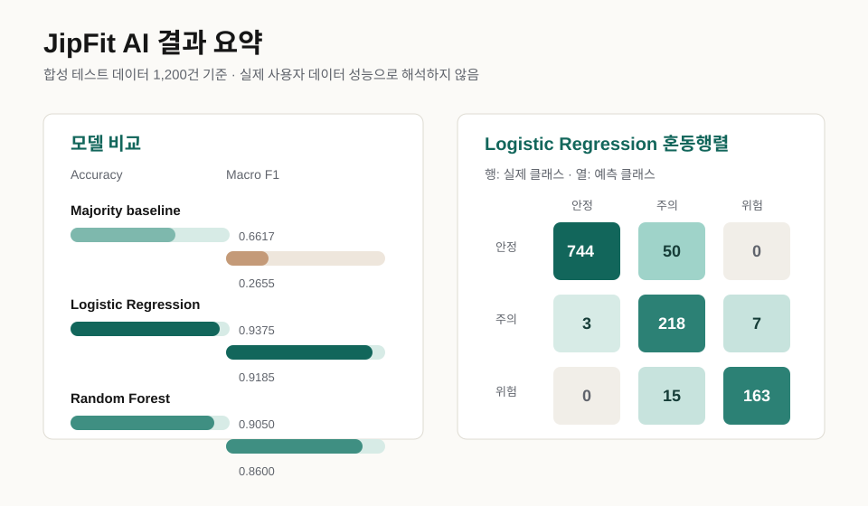

JipFit AI
청년 주거비 부담을 예측하고 조건에 맞는 정책 후보를 추천하는 데이터 분석/머신러닝 프로젝트입니다.


문제
월세, 보증금, 관리비, 부채를 함께 고려하기 어려운 청년 주거 의사결정 문제
핵심 지표
주거비 부담률, 부채 버퍼, 권장 주거비 상한, 정책 조건 적합도
분석 방법
6,000건 합성 주거 시나리오로 Logistic Regression과 Random Forest 비교
결과
합성 테스트 데이터 기준 Accuracy 0.9308, Macro F1 0.9014
오류 분석
위험·안전 경계에 가까운 조건에서 오분류 가능성을 확인하고 설명 변수 보강 필요 도출
서비스 적용
Streamlit 화면에서 부담 위험 분류와 정책 후보 추천 결과를 사용자 입력에 연결
합성 시나리오 기반 기술 검증 결과이며, 실제 사용자 데이터의 예측 성능으로 과장하지 않습니다. 다음 단계는 실거래·정책 데이터 연동과 추천 사유 설명 강화입니다.